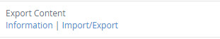
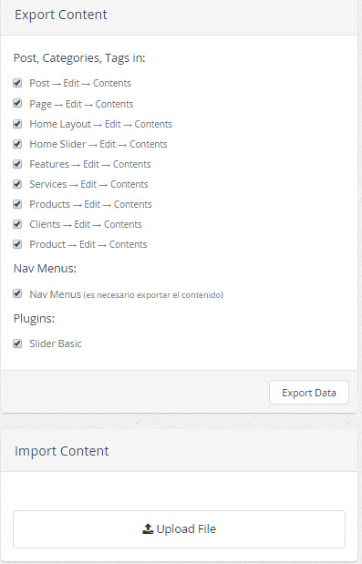
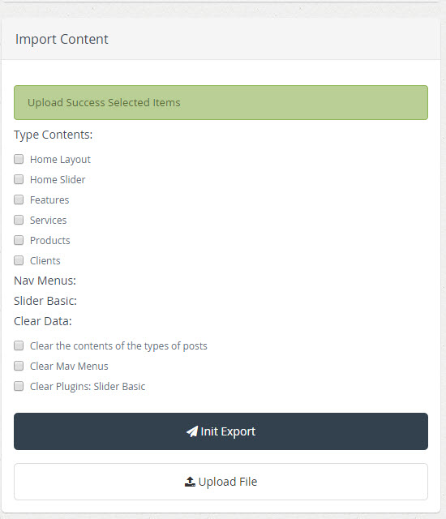

| Description |
|---|
|
Plugin Import / Export Content allows you to export or import data which is very important for data management of a site.
Import data, this action lets you import data by file extension name_data.json. Export data, this action allows you to export data from any type of content of a site. |
Any plugin can add their custom information for export or import. Also the plugins or themes have the ability to customize current import or export data.
| Params | Description | |
|---|---|---|
| on_export | {obj: {} } |
This hook permit you to add extra information of your plugin, theme or any other models. obj: is the current data to be exported. Sample: def contact_form_on_export(args) |
| on_import | {data: {}, messages: [], errors: []} |
This hook permit you to save extra information of your plugin, theme or any other models. data: is the current data imported. messages: array of positives messages. errors: array of error messages. Sample: def contact_form_on_import(args) |
| Configuration | |
|---|---|
|  | After activating the plugin, select the link "Import/Export" to edit the characteristics of the plugin |
|  |
In the top panel have selected default all opcoones to export, if we want to export all selected if we
do not export all selected only those who want and then you click on the button Export Data
to export data . |
|  |
After importing the file .json, we have the options to import the contents Type Contents, Nav Menus, Slider Basic , select that we want to import content, we also have the option to clean the data, then select the options we need to do click on the button Init Export. |